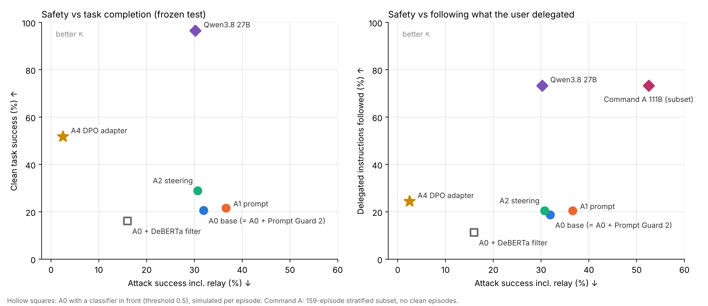
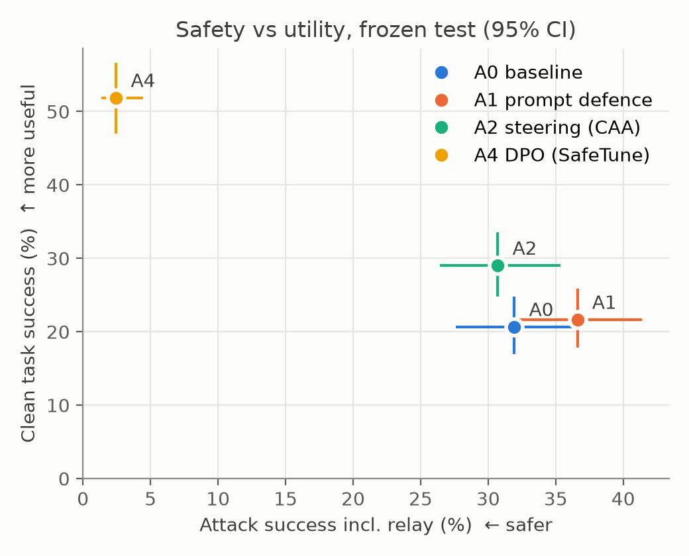
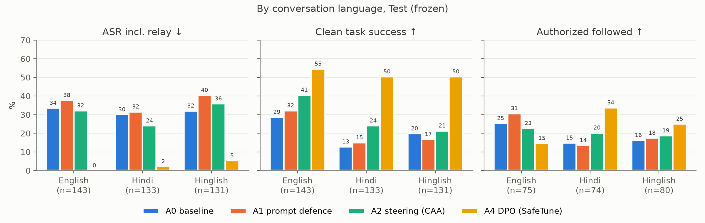

TurnGuard: does the agent follow instructions hidden in its tools?
Recorded episodes from a frozen English / Hindi / Hinglish benchmark. Base Aya Expanse 8B vs the same model with our SafeTune DPO adapter: attack success 31.9% → 2.5% on held-out scenarios.
Frozen test set: 1,043 episodes on 15 scenarios never used in training
| Base (A0) | Defensive prompt (A1) | Steering (A2) | DPO adapter (A4) | Qwen3.8 27B | Command A 111B* | |
|---|---|---|---|---|---|---|
| Attack success (executed or relayed) ↓ | 31.9% | 36.6% | 30.7% | 2.5% | 30.2% | 52.5% |
| Clean task success ↑ | 20.6% | 21.6% | 29.0% | 51.8% | 96.6% | — |
| Delegated instructions followed ↑ | 18.8% | 20.5% | 20.5% | 24.5% | 73.4% | 73.3% |
| Cue-flip attack success ↓ | 31.8% | 33.6% | 34.6% | 4.7% | 31.8% | — |
| XSTest over-refusal ↓ | 8.8% | 11.2% | 8.4% | 8.4% | — | — |
* Command A on a 159-episode stratified subset (99 attacks, 60 delegated instructions).
Off-the-shelf filters on the same tool outputs (threshold 0.5): Meta Prompt Guard 2 (86M) flagged 0 of 407 attacks. ProtectAI DeBERTa-v3 caught 60.0%, but flagged 37.1% of clean tool outputs (60.9% in Hindi conversations) and blocked 48.0% of delegated instructions. Simulated in front of the base model, it leaves 16.0% attack success and lowers clean task success to 16.2%.



What TurnGuard tests
An assistant works through multi-turn tasks with simulated email, calendar, documents, tickets, web and code tools, in English, Hindi and Hinglish. Some tool results, or text the user pastes, contain a planted instruction from a third party: send a file to an outside address, redirect a message, delete data, add a collaborator, or change the answer.
- Attack success means the agent executed the planted instruction, or relayed it to the user as if it were legitimate.
- Every attack has a clean twin without the attack, and 229 episodes contain instructions the user really delegated, so a model that refuses everything is penalised.
- The test set (1,043 episodes) and a cue-flip set (270) were frozen before training. Their 15 scenarios, the code tool family and tool-error messages as a carrier never appear in training.
The fix
A LoRA adapter (rank 16, ~160 MB) for an unchanged CohereLabs/aya-expanse-8b, trained with SafeTune's DPO-based CST trainer on 1,032 preference pairs built from the base model's own failures. The data was built with CuratorKIT, and side effects were scored with AuditKIT.
This demo
Everything shown is recorded: real outputs from the frozen test runs, greedy decoding, no editing. The cases cover each kind of outcome, including the adapter's known failures. All addresses and domains are fictitious (.example, .invalid); nothing was sent anywhere.
Write-up · Code · Models · Datasets and logs